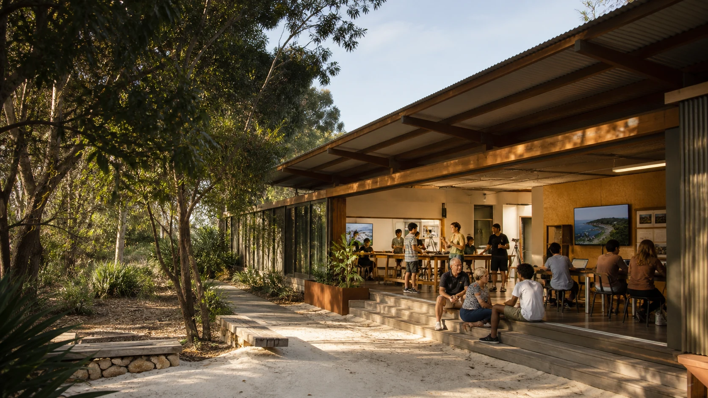

Tech, forms and AI help
A place to ask for practical support, book time or find the relevant public workbench.

The Ready S.E.T. Co-op Trust Hub explores it as a Dunwich front desk for co-working, practical help, media, training, shared equipment and local projects.
A place to ask for practical support, book time or find the relevant public workbench.
Recording, editing, screening, captioning and public-safe project evidence.
A shared table for small sessions, visiting trainers, local skills and project conversations.
Equipment records, charging, returns, repair notes, calendars and practical handovers.
Listing material recorded by the Trust Hub on 15 June 2026 described the following features. Current availability, terms and property details still need checking.
Commercial premises with amenities and ducted air conditioning.
Street access suited to a visible public-facing base.
Eight secure common car parks and a loading area for equipment and deliveries.
Its property trail, possible uses, trust pathways, jobs, media and grant work carry the fuller proposal. This is separate from the site-neutral Sand and Screen idea and its location research.